HW1_Basic_Monte_Carlo_and_Bayesian_inference
Kiseok Lee
2022-01-15
Last updated: 2022-01-22
Checks: 7 0
Knit directory: fiveMinuteStats/analysis/
This reproducible R Markdown analysis was created with workflowr (version 1.6.2). The Checks tab describes the reproducibility checks that were applied when the results were created. The Past versions tab lists the development history.
Great! Since the R Markdown file has been committed to the Git repository, you know the exact version of the code that produced these results.
Great job! The global environment was empty. Objects defined in the global environment can affect the analysis in your R Markdown file in unknown ways. For reproduciblity it’s best to always run the code in an empty environment.
The command set.seed(12345) was run prior to running the code in the R Markdown file. Setting a seed ensures that any results that rely on randomness, e.g. subsampling or permutations, are reproducible.
Great job! Recording the operating system, R version, and package versions is critical for reproducibility.
Nice! There were no cached chunks for this analysis, so you can be confident that you successfully produced the results during this run.
Great job! Using relative paths to the files within your workflowr project makes it easier to run your code on other machines.
Great! You are using Git for version control. Tracking code development and connecting the code version to the results is critical for reproducibility.
The results in this page were generated with repository version f7ccd59. See the Past versions tab to see a history of the changes made to the R Markdown and HTML files.
Note that you need to be careful to ensure that all relevant files for the analysis have been committed to Git prior to generating the results (you can use wflow_publish or wflow_git_commit). workflowr only checks the R Markdown file, but you know if there are other scripts or data files that it depends on. Below is the status of the Git repository when the results were generated:
Ignored files:
Ignored: .Rhistory
Ignored: .Rproj.user/
Untracked files:
Untracked: analysis/220120_mixture_models_01.Rmd
Untracked: analysis/HW2_Bayesian_inference_mixture_models.Rmd
Untracked: texput.log
Note that any generated files, e.g. HTML, png, CSS, etc., are not included in this status report because it is ok for generated content to have uncommitted changes.
These are the previous versions of the repository in which changes were made to the R Markdown (analysis/HW1_Basic_Monte_Carlo_and_Bayesian_inference.Rmd) and HTML (docs/HW1_Basic_Monte_Carlo_and_Bayesian_inference.html) files. If you’ve configured a remote Git repository (see ?wflow_git_remote), click on the hyperlinks in the table below to view the files as they were in that past version.
| File | Version | Author | Date | Message |
|---|---|---|---|---|
| Rmd | f7ccd59 | Kiseok Lee | 2022-01-22 | wflow_publish(“analysis/HW1_Basic_Monte_Carlo_and_Bayesian_inference.Rmd”) |
| html | 222ac90 | Kiseok Lee | 2022-01-16 | Build site. |
| Rmd | e2f5a68 | Kiseok Lee | 2022-01-16 | wflow_publish(“analysis/HW1_Basic_Monte_Carlo_and_Bayesian_inference.Rmd”) |
HW1 Basic Monte Carlo method; Likelihood/Bayesian inference
Name: Kiseok Lee
Date: 1/15/22
Class: HGEN 486 Computational Biology
A-2-c) Inverse Transform Sampling simulation
Veryfiy your previous answer by simulation. Specifically, using R to simulate 1000 values of U and compute 1000 corresponding values of - log (U).
Plot the empirical cumulative distribution function (in R, on can use plot(ecdf(x))) for your resulting random deviates and show they are qualitatively similar to that expected for an exponential random variable by overlaying a plot of the expected cdf.
# -log(U) sampling 1000 times
U = runif(1000)
x = -log(U)
# Plot the empirical cumulative
# distribution function
plot(ecdf(x), col = "blue", lty = 1, pch = 19,
lwd = 1, main = "Empirical cumulative distribution function")
# Exponential random variable
set.seed(1)
k = rexp(1000, rate = 1) # rate is 1 for mean to be 1
lines(ecdf(k), col = "red", type = "b", lty = 1,
pch = 19, lwd = 1)
legend(2, 0.2, legend = c("-log(U)", "Exponential random variable"),
col = c("Blue", "Red"), lty = 1, cex = 0.8,
box.lty = 0)
Exercise: Likelihood Ratio: how big is convincing?
https://stephens999.github.io/fiveMinuteStats/LR_and_BF.html
a.
Write a function to simulate data for the medical screening example above.
The function should take as input the proportion of individuals who have the disease, and the number of individuals to simulate.
It should output a table, one row for each individual, with two columns: the first column (x) is the protein concentration for that individual, the second column (z) is an indicator of disease status (1=disease, 0=normal).
First let’s build the components of the function.
# distribution protein concentration in
# blood of the diseased and healthy
x = seq(0, 10, length = 100)
plot(x, dgamma(x, scale = 0.5, shape = 2),
type = "l", xlab = "Protein concentration",
ylab = "density", main = "protein concentration distribution in blood of the diseased and healthy")
lines(x, dgamma(x, scale = 1, shape = 2),
type = "l", col = "red")
legend(4, 0.6, legend = c("Healthy", "Diseased"),
col = c("Black", "Red"), lty = 1, cex = 0.8,
box.lty = 0)
# Input proportion of individuals who
# have the disease
p_dis = 0.1
# the number of individuals to simulate
n_ind = 1000
# Protein concentration random
# generation
set.seed(1)
# healthy
healthy_protein_conc <- function(n) {
rgamma(n, scale = 0.5, shape = 2)
}
healthy_protein_conc(n = 1)[1] 0.4154325# diseased
diseased_protein_conc <- function(n) {
rgamma(n, scale = 1, shape = 2)
}
diseased_protein_conc(n = 1)[1] 3.570756# Sample individual with diseased or no
# disease
z = sample(0:1, size = n_ind, prob = c(1 -
p_dis, p_dis), replace = T)
# create x vector (protein
# concentration)
x = rep(-1, n_ind)
for (i in 1:n_ind) {
# print(i) healthy
if (z[i] == 0) {
x[i] = healthy_protein_conc(n = 1)
# print(x[i]) diseased
} else if (z[i] == 1) {
x[i] = diseased_protein_conc(n = 1)
# print(x[i])
} else {
print("Error")
}
}
head(x)[1] 0.05921332 2.96027644 2.04369326 0.14493148 1.71737662 0.45838017# bind columns
table_concentration <- cbind(x, z)
head(table_concentration) x z
[1,] 0.05921332 0
[2,] 2.96027644 1
[3,] 2.04369326 0
[4,] 0.14493148 0
[5,] 1.71737662 0
[6,] 0.45838017 0Wrap it into a function
## Wrapping into a function
#' @param p_dis proportion of individuals who have the disease
#' @param n_ind the number of individuals to simulate
simulate_disease <- function(p_dis, n_ind) {
# Sample individual with diseased
# or no disease
z = sample(0:1, size = n_ind, prob = c(1 -
p_dis, p_dis), replace = T)
# create x vector (protein
# concentration)
x = rep(-1, n_ind)
for (i in 1:n_ind) {
# print(i) healthy
if (z[i] == 0) {
x[i] = rgamma(1, scale = 0.5,
shape = 2)
# print(x[i]) diseased
} else if (z[i] == 1) {
x[i] = rgamma(1, scale = 1, shape = 2)
# print(x[i])
} else {
print("Error")
}
}
# bind columns
table_concentration <- cbind(x, z)
return(table_concentration)
}
# example
simulate_disease(p_dis = 0.4, n_ind = 10) x z
[1,] 3.5380273 1
[2,] 1.4887009 0
[3,] 0.6361705 0
[4,] 0.5308743 0
[5,] 2.0329460 0
[6,] 1.4075391 0
[7,] 1.0157633 0
[8,] 0.7970713 0
[9,] 1.5391166 0
[10,] 2.8332090 1b.
Write a function to compute the likelihood ratio in the medical screening example.
Construct the elements of the function
# When z == 0 (healthy), likelihood
# ratio is
healthy_LR <- function(x) {
dgamma(x, scale = 0.5, shape = 2)/dgamma(x,
scale = 1, shape = 2)
}
# When z == 1, likelihood ratio is..
diseased_LR <- function(x) {
dgamma(x, scale = 1, shape = 2)/dgamma(x,
scale = 0.5, shape = 2)
}
## function to compute the likelihood
## ratio input will be the simulated
## data
vec_LR = rep(-1, dim(table_concentration)[1]) # empty likelihood ratio vector
for (i in 1:dim(table_concentration)[1]) {
# print(i) healthy
if (table_concentration[, "z"][i] ==
0) {
vec_LR[i] = healthy_LR(table_concentration[,
"x"][i])
# print(x[i]) diseased
} else if (table_concentration[, "z"][i] ==
1) {
vec_LR[i] = diseased_LR(table_concentration[,
"x"][i])
# print(x[i])
} else {
print("Error")
}
}
head(vec_LR)[1] 3.7700228 4.8258268 0.5181975 3.4603262 0.7181461 2.5292282# bind to the table as another column
table_LR <- cbind(table_concentration, LR = vec_LR)Wrap into a function
#' @table_concentration this is an simulated data input with column x and z. x is protein concentration and z is healthy or diseased index of 0 and 1.
calculate_LR <- function(table_concentration) {
# When z == 0 (healthy), likelihood
# ratio is
healthy_LR <- function(x) {
dgamma(x, scale = 0.5, shape = 2)/dgamma(x,
scale = 1, shape = 2)
}
# When z == 1, likelihood ratio
# is..
diseased_LR <- function(x) {
dgamma(x, scale = 1, shape = 2)/dgamma(x,
scale = 0.5, shape = 2)
}
## function to compute the
## likelihood ratio input will be
## the simulated data
vec_LR = rep(-1, dim(table_concentration)[1]) # empty likelihood ratio vector
for (i in 1:dim(table_concentration)[1]) {
# print(i) healthy
if (table_concentration[, "z"][i] ==
0) {
vec_LR[i] = healthy_LR(table_concentration[,
"x"][i])
# print(x[i]) diseased
} else if (table_concentration[, "z"][i] ==
1) {
vec_LR[i] = diseased_LR(table_concentration[,
"x"][i])
# print(x[i])
} else {
print("Error")
}
}
head(vec_LR)
# bind to the table as another
# column
table_LR <- cbind(table_concentration,
LR = vec_LR)
return(table_LR)
}
# example
calculate_LR(table_concentration) %>%
head() x z LR
[1,] 0.05921332 0 3.7700228
[2,] 2.96027644 1 4.8258268
[3,] 2.04369326 0 0.5181975
[4,] 0.14493148 0 3.4603262
[5,] 1.71737662 0 0.7181461
[6,] 0.45838017 0 2.5292282b. 2nd trial
Because the simulations did not agree with the theoretical predictions. I’ll reconstruct the function to trouble shoot.
calculate_diseased_LR <- function(table_concentration) {
# only use the likelihood ratio
# where diseased likelihood is in
# the numerator.
diseased_LR <- function(x) {
dgamma(x, scale = 1, shape = 2)/dgamma(x,
scale = 0.5, shape = 2)
}
vec_LR = rep(-1, dim(table_concentration)[1]) # empty likelihood ratio vector
for (i in 1:dim(table_concentration)[1]) {
vec_LR[i] = diseased_LR(table_concentration[,
"x"][i])
}
head(vec_LR)
# bind to the table as another
# column
table_LR <- cbind(table_concentration,
LR = vec_LR)
return(table_LR)
}
# example
calculate_diseased_LR(table_concentration) %>%
head() x z LR
[1,] 0.05921332 0 0.2652504
[2,] 2.96027644 1 4.8258268
[3,] 2.04369326 0 1.9297663
[4,] 0.14493148 0 0.2889901
[5,] 1.71737662 0 1.3924743
[6,] 0.45838017 0 0.3953775c.
Use the above functions to answer the following question by simulation.
Suppose we screen a population of individuals, 20% of which are diseased, and compute the LR for each individual screened. Among individuals with an LR “near” c, what proportion are truly diseased? Denoting this proportion qD(c), make a plot of log10(c) [x axis] vs qD(c) [y axis], with c varying from 1/10 to 10 say (log10(c) varies from -1 to 1.) Or maybe a wider range if you like (the wider the range, the larger the simulation study you will need to get reliable results).
# simulation
table_concentration1 <- simulate_disease(p_dis = 0.2,
n_ind = 10000)
head(table_concentration1) x z
[1,] 1.0510235 0
[2,] 1.3097951 1
[3,] 1.0693210 0
[4,] 0.5423517 0
[5,] 0.6635898 0
[6,] 2.8400104 0table_LR1 <- calculate_LR(table_concentration1)
head(table_LR1) x z LR
[1,] 1.0510235 0 1.3983192
[2,] 1.3097951 1 0.9263536
[3,] 1.0693210 0 1.3729660
[4,] 0.5423517 0 2.3255177
[5,] 0.6635898 0 2.0599970
[6,] 2.8400104 0 0.2337002hist(table_LR1[, "LR"], breaks = 100)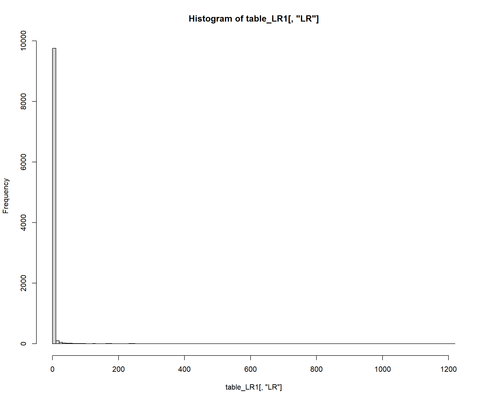
# 'near' definition
c = 5 # LR
eps = 0.5 # [LR - eps, LR + eps]
class(table_LR1)[1] "matrix" "array" # convert to dataframe
df_LR1 <- data.frame(table_LR1)
# Individuals with an LR “near” c
df_near <- df_LR1 %>%
filter(LR <= c + eps & LR >= c - eps)
df_near %>%
head() x z LR
1 2.908377 1 4.581759
2 2.980498 1 4.924408
3 3.034036 1 5.195232
4 2.979295 1 4.918487
5 3.044183 1 5.248218
6 3.032261 1 5.186019# proportion are truly diseased?
qD <- sum(df_near$z)/dim(df_near)[1]
qD[1] 1Wrap in to qD function
#' @param table_LR1 table of simulated x, z, LR
#' @param c LR
#' @param eps epsilon, range of + - c
calc_qD <- function(table_LR1, c, eps) {
# convert to dataframe
df_LR1 <- data.frame(table_LR1)
# Individuals with an LR “near” c
df_near <- df_LR1 %>%
filter(LR <= c + eps & LR >= c -
eps)
# proportion are truly diseased?
qD <- sum(df_near$z)/dim(df_near)[1]
return(qD)
}make a plot of log10(c) [x axis] vs qD(c) [y axis], with c varying from 1/10 to 10 say (log10(c) varies from -1 to 1.)
c <- seq(from = 1/10, to = 10, length.out = 1000)
## Let's say we define 'near' relative
## to c. eps = c/100 calculate qD for
## vector c
vec_qD <- c()
for (i in 1:length(c)) {
# print(i)
vec_qD[i] = calc_qD(table_LR1, c[i],
eps = c/100)
}
plot(log10(c), vec_qD, type = "l", xlab = "log10(c)",
ylab = "qD(c): proportion of truly diseased",
main = "Proportion are truly diseased (LR range: 0.1 < c < 10)")
## Let's say we define 'near' in terms
## of absolute value. eps = 0.05
## calculate qD for vector c
vec_qD <- c()
for (i in 1:length(c)) {
# print(i)
vec_qD[i] = calc_qD(table_LR1, c[i],
eps = 0.05)
}
plot(log10(c), vec_qD, type = "l", xlab = "log10(c)",
ylab = "qD(c): proportion of truly diseased",
main = "Proportion are truly diseased (LR range: 0.1 < c < 10)")
# Function
plot_qD <- function(table_LR1, c, eps) {
vec_qD <- c()
for (i in 1:length(c)) {
# print(i)
vec_qD[i] = calc_qD(table_LR1, c[i],
eps)
}
plot(log10(c), vec_qD, type = "l", xlab = "log10(c)",
ylab = "qD(c): proportion of truly diseased",
main = paste0("Proportion are truly diseased (eps= ",
eps, ")"))
}
plot_qD(table_LR1, c, eps = 0.1)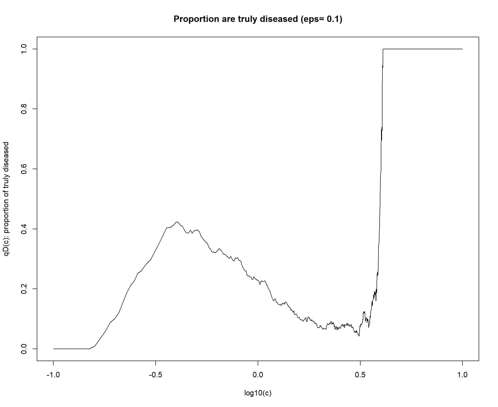
plot_qD(table_LR1, c, eps = 0.2)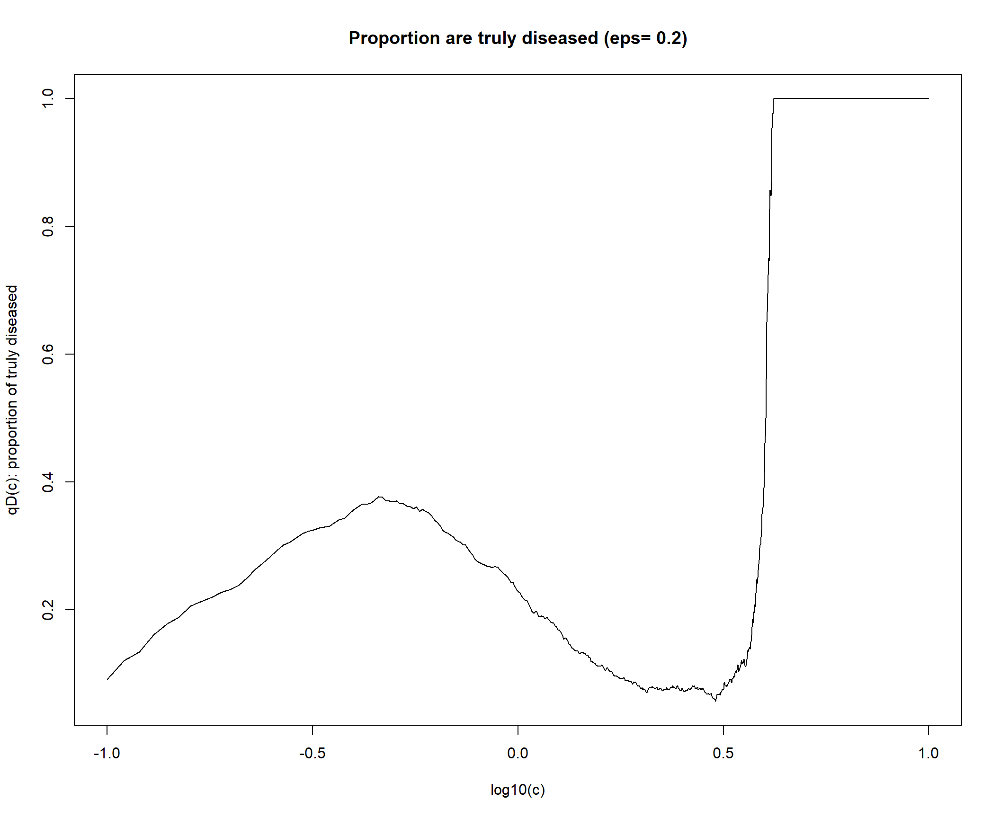
plot_qD(table_LR1, c, eps = 0.3)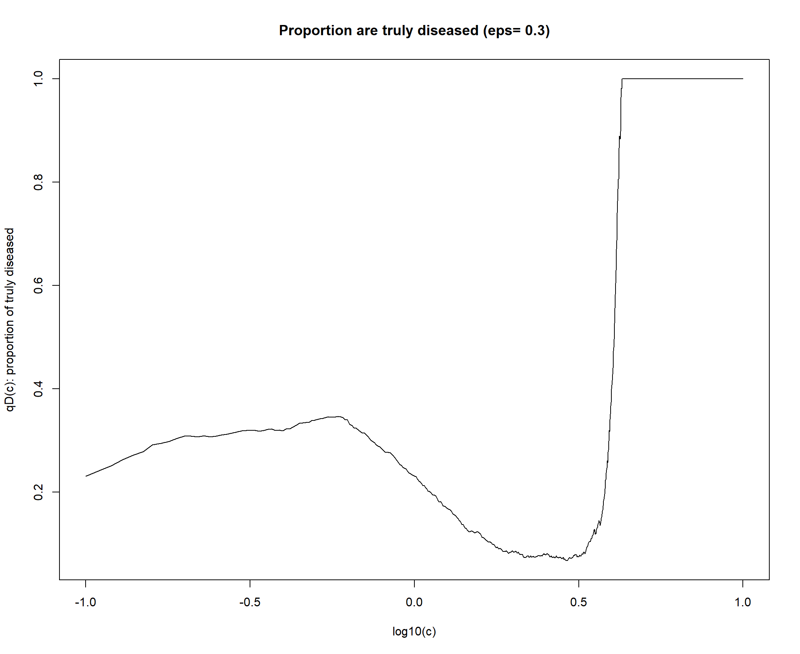
plot_qD(table_LR1, c, eps = 2)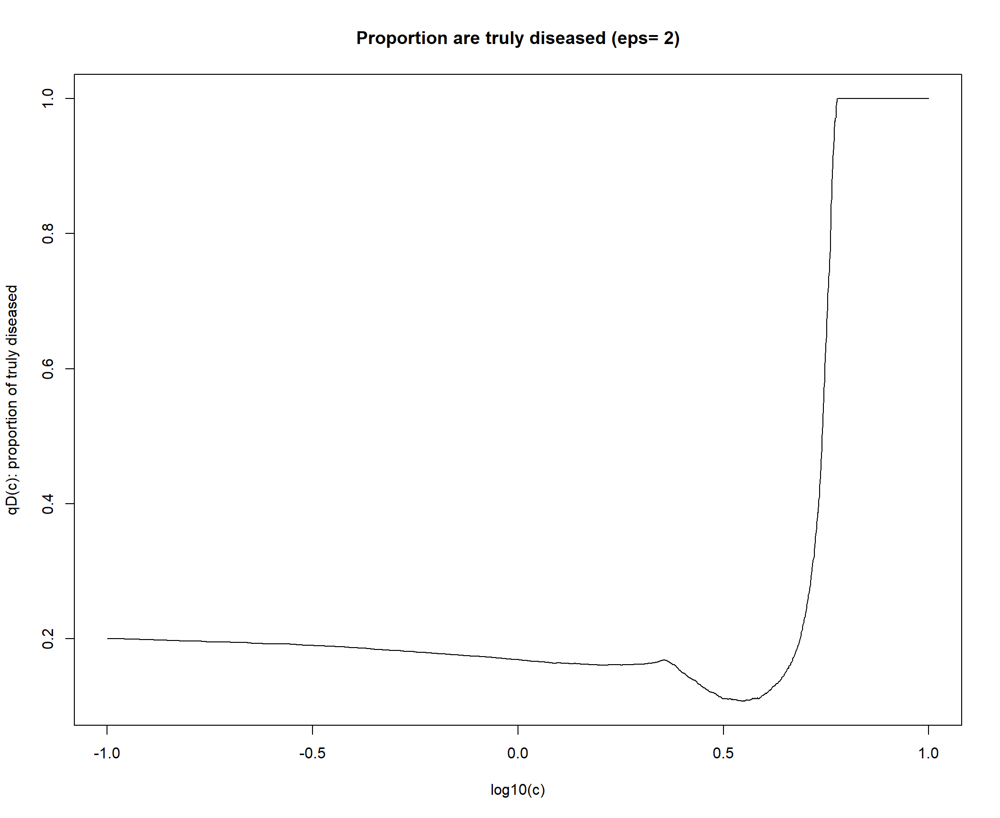
c. 2nd trial
Using the new LR.
table_concentration1 <- simulate_disease(p_dis = 0.2,
n_ind = 10000)
table_LR1 <- calculate_diseased_LR(table_concentration1)
c <- seq(from = 1/10, to = 10, length.out = 1000)
plot_qD(table_LR1, c, eps = 0.1)
plot_qD(table_LR1, c, eps = 0.2)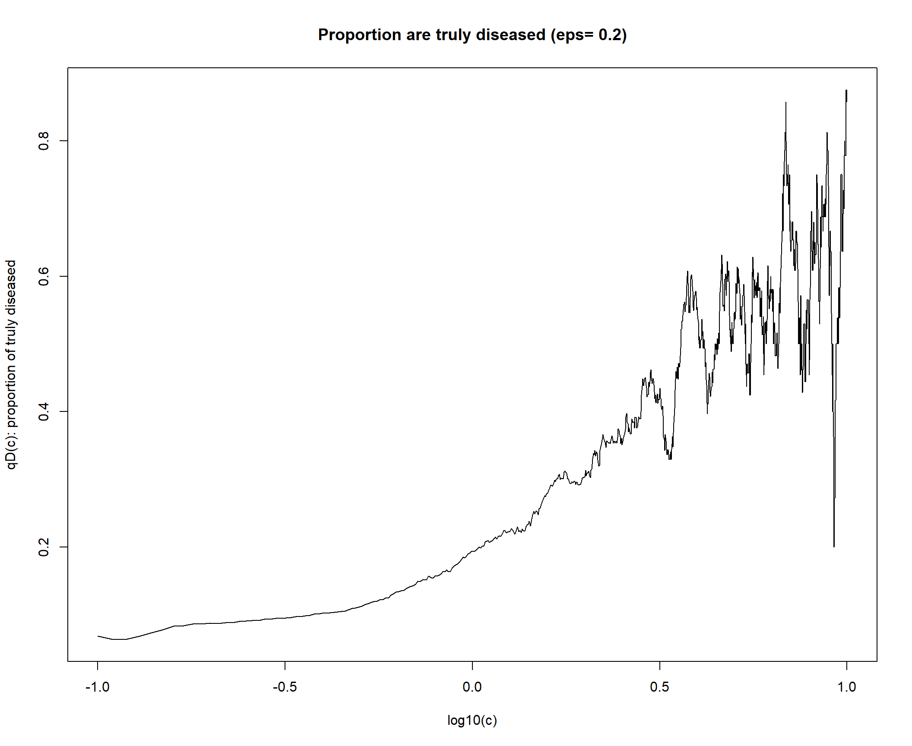
plot_qD(table_LR1, c, eps = 0.3)plot_qD(table_LR1, c, eps = 2)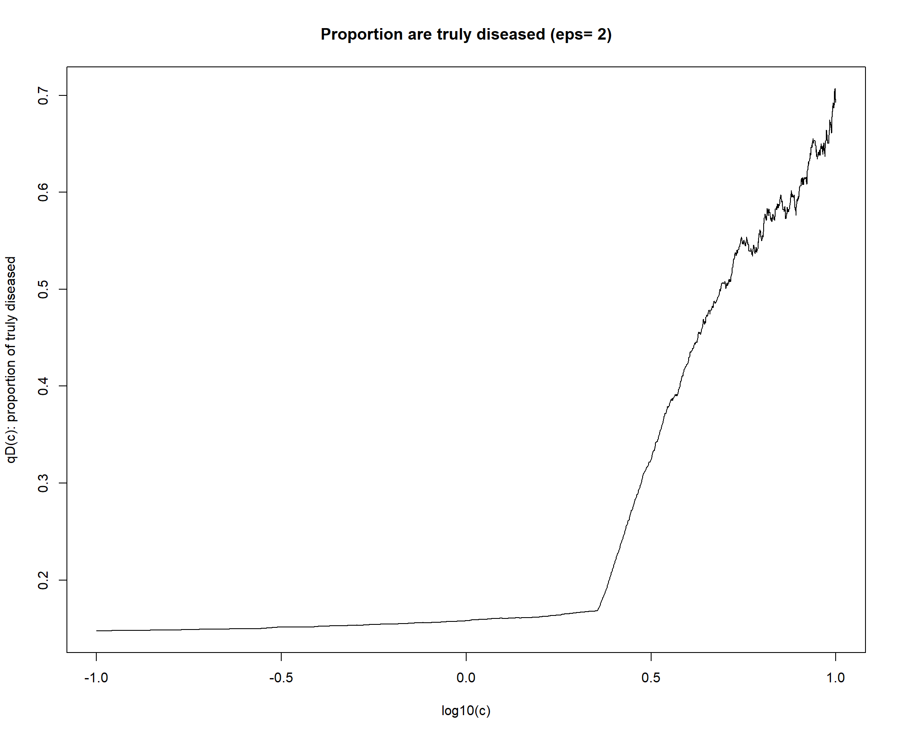
d.
Use the computations introduced in this vignette to compute the theoretical value for qD(c), and plot these on the same graph as your simulation results to demonstrate that your simulations match the theory. [It should provide a good agreement, provided your simulation is large enough.]
First, let’s get the theoretical value of qD(c), using the computation introduced in this vignette
https://stephens999.github.io/fiveMinuteStats/LR_and_BF.html
# computation introduced in this
# vignette
p_dis = 0.2 # proportion of diseased
c = 3 # c is LR
qD_vig = p_dis * c/((1 - p_dis) + p_dis *
c)
qD_vig[1] 0.4285714calc_qD_vig <- function(c, p_dis) {
qD_vig = p_dis * c/((1 - p_dis) + p_dis *
c)
return(qD_vig)
}
# plot theoretical
c <- seq(from = 1/10, to = 10, length.out = 1000)
calc_qD_vig(c, p_dis = 0.2) %>%
head()[1] 0.02439024 0.02674266 0.02908375 0.03141361 0.03373232 0.03603995plot(log10(c), calc_qD_vig(c, p_dis = 0.2),
type = "l", xlab = "log10(c)", ylab = "qD(c)",
main = "Theoretical value of qD(c)")
# overlay simulated qD above
vec_qD <- c()
for (i in 1:length(c)) {
# print(i)
vec_qD[i] = calc_qD(table_LR1, c[i],
eps = c[i]/10)
}
plot(log10(c), vec_qD, type = "l", xlab = "log10(c)",
ylab = "qD(c): proportion of truly diseased",
main = "Theoretical value of qD(c) vs. Simulated")
lines(log10(c), calc_qD_vig(c, p_dis = 0.2),
col = "blue")
legend(-0.9, 0.8, legend = c("Simulated",
"Theoretical"), col = c("Black", "Blue"),
lty = 1, cex = 0.7, box.lty = 0)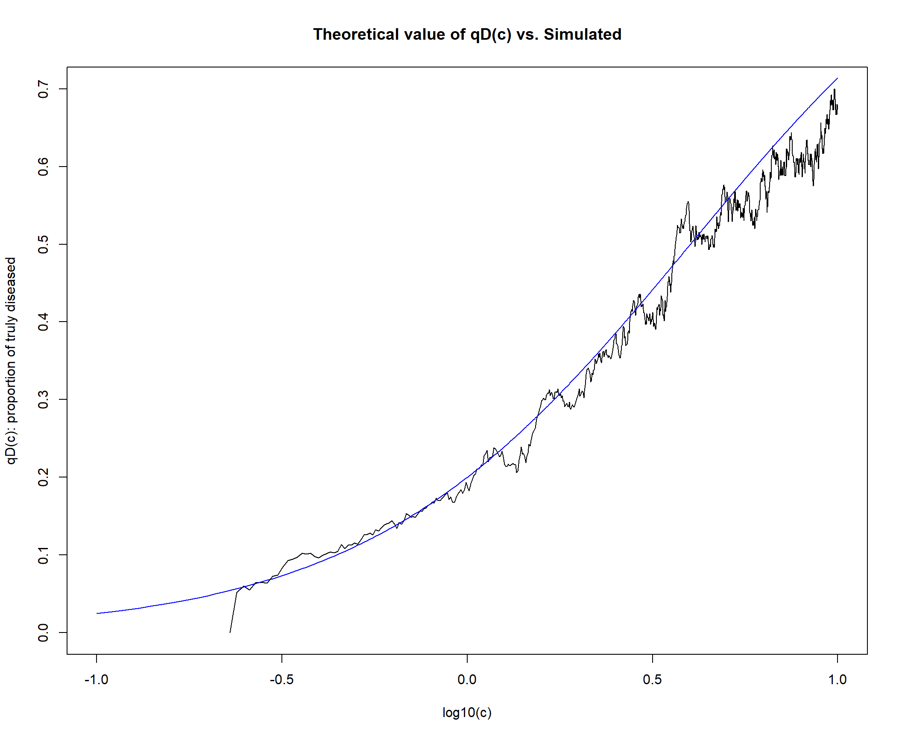 The theoretical prediction cannot capture the local increase and decrease at -0.5 < log10(c) < 0.
e.
Repeat the above, but in the case where only 2% of the screened population are diseased.
# simulation
table_concentration2 <- simulate_disease(p_dis = 0.02,
n_ind = 10000)
head(table_concentration2) x z
[1,] 2.0220158 1
[2,] 1.8506297 0
[3,] 0.8189479 0
[4,] 0.9341875 0
[5,] 0.9560194 0
[6,] 0.4914371 0table_LR2 <- calculate_LR(table_concentration2)
head(table_LR2) x z LR
[1,] 2.0220158 1 1.8883840
[2,] 1.8506297 0 0.6285527
[3,] 0.8189479 0 1.7635810
[4,] 0.9341875 0 1.5716199
[5,] 0.9560194 0 1.5376802
[6,] 0.4914371 0 2.4469866# overlay simulated qD above
c <- seq(from = 1/10, to = 10, length.out = 1000)
vec_qD <- c()
for (i in 1:length(c)) {
# print(i)
vec_qD[i] = calc_qD(table_LR2, c[i],
eps = c[i]/10)
}
plot(log10(c), vec_qD, type = "l", xlab = "log10(c)",
ylab = "qD(c): proportion of truly diseased",
main = "Theoretical value of qD(c) vs. Simulated")
lines(log10(c), calc_qD_vig(c, p_dis = 0.02),
col = "blue")
legend(-0.9, 0.9, legend = c("Simulated",
"Theoretical"), col = c("Black", "Blue"),
lty = 1, cex = 0.7, box.lty = 0)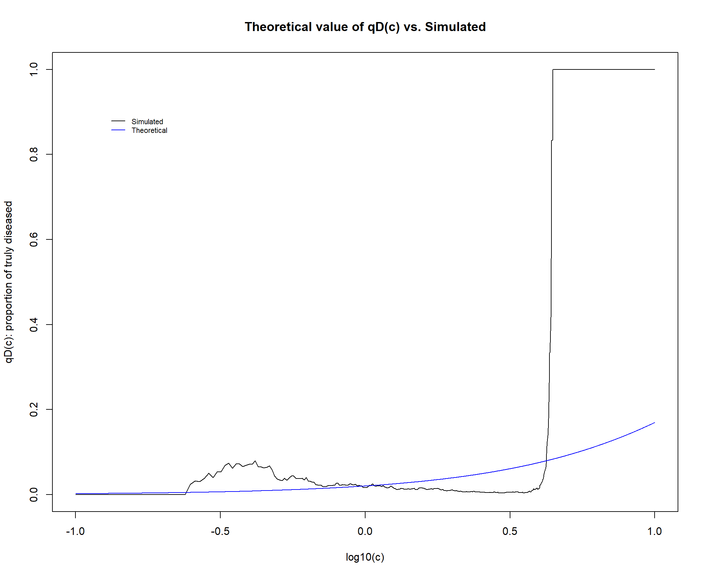
Try with larger c range
c <- seq(from = 1/50, to = 50, length.out = 1000)
# overlay simulated qD above
vec_qD <- c()
for (i in 1:length(c)) {
# print(i)
vec_qD[i] = calc_qD(table_LR2, c[i],
eps = c[i]/10)
}
plot(log10(c), vec_qD, type = "l", xlab = "log10(c)",
ylab = "qD(c): proportion of truly diseased",
main = "Theoretical value of qD(c) vs. Simulated")
lines(log10(c), calc_qD_vig(c, p_dis = 0.02),
col = "blue")
legend(-0.9, 0.9, legend = c("Simulated",
"Theoretical"), col = c("Black", "Blue"),
lty = 1, cex = 0.7, box.lty = 0)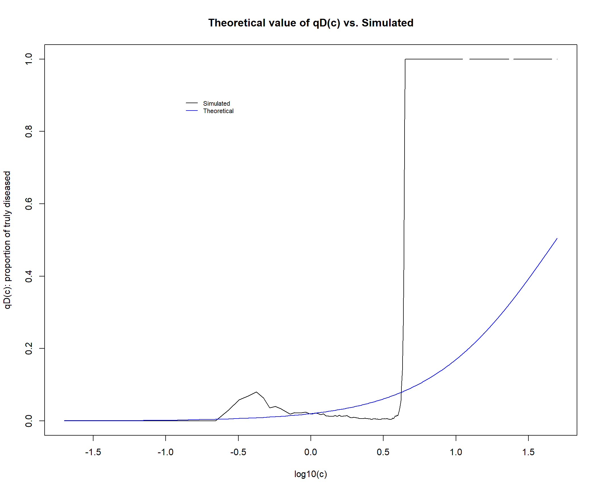
e. 2nd trial
With the new LR function
# simulation
table_concentration2 <- simulate_disease(p_dis = 0.02,
n_ind = 10000)
head(table_concentration2) x z
[1,] 0.8556753 0
[2,] 2.2370088 0
[3,] 0.1016559 0
[4,] 2.3501595 0
[5,] 1.4547424 0
[6,] 1.0788641 0table_LR2 <- calculate_diseased_LR(table_concentration2)
head(table_LR2) x z LR
[1,] 0.8556753 0 0.5882407
[2,] 2.2370088 0 2.3413191
[3,] 0.1016559 0 0.2767506
[4,] 2.3501595 0 2.6218105
[5,] 1.4547424 0 1.0708450
[6,] 1.0788641 0 0.7353342# overlay simulated qD above
c <- seq(from = 1/10, to = 10, length.out = 1000)
vec_qD <- c()
for (i in 1:length(c)) {
# print(i)
vec_qD[i] = calc_qD(table_LR2, c[i],
eps = 0.05)
}
plot(log10(c), vec_qD, type = "l", xlab = "log10(c)",
ylab = "qD(c): proportion of truly diseased",
main = "Theoretical value of qD(c) vs. Simulated")
lines(log10(c), calc_qD_vig(c, p_dis = 0.02),
col = "blue")
legend(-0.9, 0.9, legend = c("Simulated",
"Theoretical"), col = c("Black", "Blue"),
lty = 1, cex = 0.7, box.lty = 0)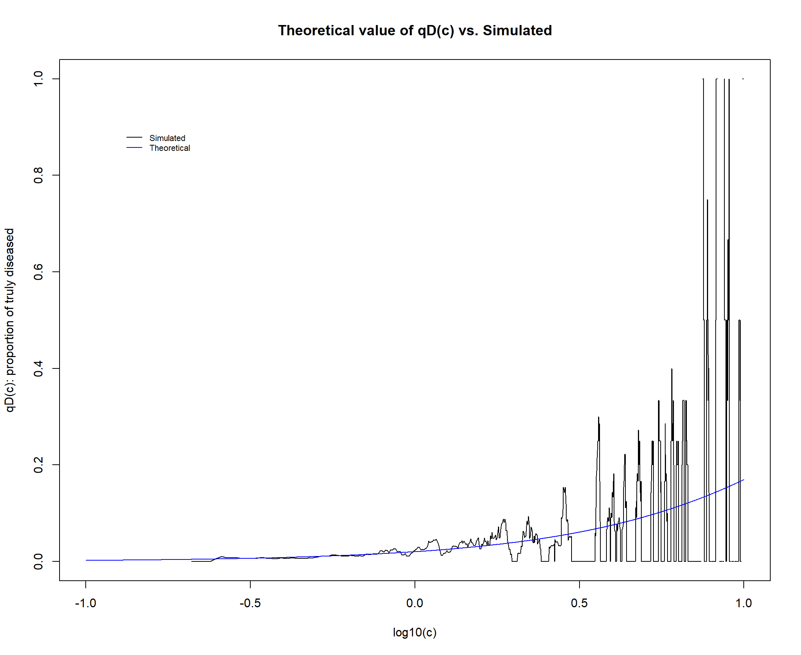
Try with larger c range
c <- seq(from = 1/50, to = 50, length.out = 1000)
# overlay simulated qD above
vec_qD <- c()
for (i in 1:length(c)) {
# print(i)
vec_qD[i] = calc_qD(table_LR2, c[i],
eps = c[i]/10)
}
plot(log10(c), vec_qD, type = "l", xlab = "log10(c)",
ylab = "qD(c): proportion of truly diseased",
main = "Theoretical value of qD(c) vs. Simulated")
lines(log10(c), calc_qD_vig(c, p_dis = 0.02),
col = "blue")
legend(-0.9, 0.9, legend = c("Simulated",
"Theoretical"), col = c("Black", "Blue"),
lty = 1, cex = 0.7, box.lty = 0)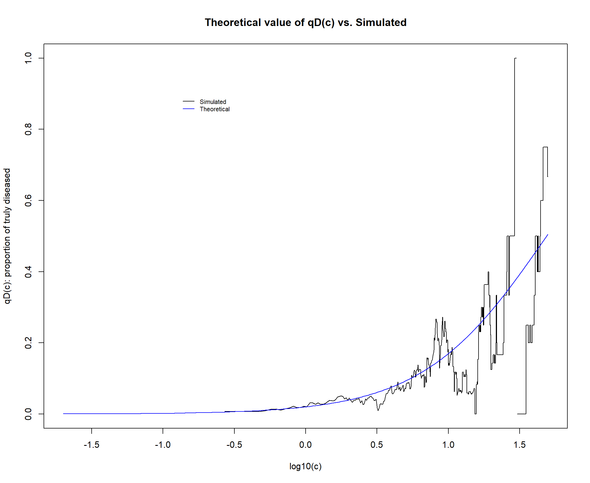
Compared with disease proportion of 0.2, this 0.02 simulation result agrees less with the theoretical prediction.
sessionInfo()R version 4.0.3 (2020-10-10)
Platform: x86_64-w64-mingw32/x64 (64-bit)
Running under: Windows 10 x64 (build 19042)
Matrix products: default
locale:
[1] LC_COLLATE=English_United States.1252
[2] LC_CTYPE=English_United States.1252
[3] LC_MONETARY=English_United States.1252
[4] LC_NUMERIC=C
[5] LC_TIME=English_United States.1252
attached base packages:
[1] stats graphics grDevices utils datasets methods base
other attached packages:
[1] rmarkdown_2.9 ggpubr_0.4.0 ggrepel_0.9.1 ape_5.5
[5] openxlsx_4.2.3 devtools_2.4.0 usethis_2.0.1 gtools_3.8.2
[9] reshape2_1.4.4 readxl_1.3.1 magrittr_2.0.1 forcats_0.5.1
[13] stringr_1.4.0 purrr_0.3.4 readr_1.4.0 tidyr_1.1.3
[17] tibble_3.0.4 tidyverse_1.3.1 vegan_2.5-7 lattice_0.20-41
[21] permute_0.9-5 RColorBrewer_1.1-2 ggplot2_3.3.5 dplyr_1.0.5
[25] knitr_1.37
loaded via a namespace (and not attached):
[1] colorspace_2.0-0 ggsignif_0.6.2 ellipsis_0.3.2 rio_0.5.27
[5] rprojroot_2.0.2 fs_1.5.0 rstudioapi_0.13 remotes_2.4.0
[9] fansi_0.4.2 lubridate_1.7.10 xml2_1.3.2 splines_4.0.3
[13] cachem_1.0.4 pkgload_1.2.1 jsonlite_1.7.2 workflowr_1.6.2
[17] broom_0.7.9 cluster_2.1.0 dbplyr_2.1.1 compiler_4.0.3
[21] httr_1.4.2 backports_1.2.1 assertthat_0.2.1 Matrix_1.2-18
[25] fastmap_1.1.0 cli_3.0.1 formatR_1.11 later_1.2.0
[29] htmltools_0.5.1.1 prettyunits_1.1.1 tools_4.0.3 gtable_0.3.0
[33] glue_1.4.2 Rcpp_1.0.5 carData_3.0-4 cellranger_1.1.0
[37] jquerylib_0.1.4 vctrs_0.3.8 nlme_3.1-149 xfun_0.29
[41] ps_1.6.0 testthat_3.0.2 rvest_1.0.1 lifecycle_1.0.0
[45] rstatix_0.7.0 MASS_7.3-53 scales_1.1.1 hms_1.1.0
[49] promises_1.2.0.1 parallel_4.0.3 yaml_2.2.1 curl_4.3.2
[53] memoise_2.0.0 sass_0.4.0 stringi_1.5.3 highr_0.9
[57] desc_1.3.0 pkgbuild_1.2.0 zip_2.1.1 rlang_0.4.10
[61] pkgconfig_2.0.3 evaluate_0.14 tidyselect_1.1.1 processx_3.5.1
[65] plyr_1.8.6 R6_2.5.0 generics_0.1.0 DBI_1.1.1
[69] pillar_1.6.0 haven_2.4.1 whisker_0.4 foreign_0.8-80
[73] withr_2.4.2 mgcv_1.8-33 abind_1.4-5 modelr_0.1.8
[77] crayon_1.4.1 car_3.0-11 utf8_1.1.4 grid_4.0.3
[81] data.table_1.14.0 callr_3.7.0 git2r_0.28.0 reprex_2.0.0
[85] digest_0.6.27 httpuv_1.6.0 munsell_0.5.0 bslib_0.2.5.1
[89] sessioninfo_1.1.1This site was created with R Markdown